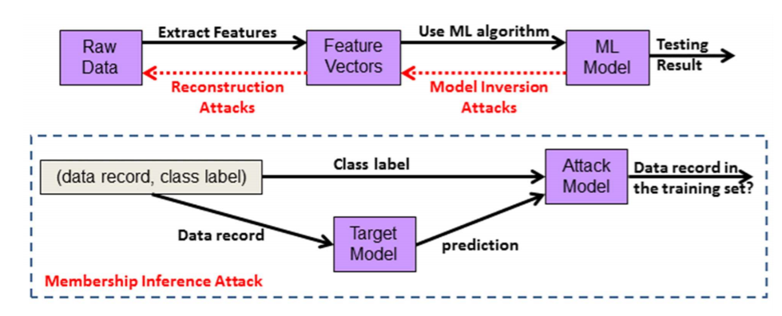

Threats to non-privacy-aware ML algorithms¶
Roles in an ML task¶
In each of ML task, three different roles are possible:
the input party (data owners or contributors)
the computation party
the results’ party
Here is how the data flows in such a setting: The data owner(s) send their data to the computation party that performs the required ML task and delivers the output to the results’ party (this output can be the ML model itself that the results’ party can utilize for testing new samples, or ML models kept by computation party and new samples submitted by results’ party).
How roles are distributed affects privacy: If all three roles are assumed by the same entity, then privacy is naturally preserved; however, when these roles are distributed across two or more entities, then privacy enhancing technologies are needed. It is common to have the same entity be both the computation and the results’ parties, and this entity is mostly separate from the data owners.
Types of threats¶

Private Data in the Clear¶
Private data stored in its original form in the computation party servers (i.e. not encrypted in any way).
This is the biggest type of threat as the private data would be susceptible to both insider and outsider attacks.
The data could be stored as raw data or as features extracted from it, this is safer than storing raw data but not immune to reconstruction attacks.
Reconstruction Attacks¶
Adversary’s knowledge: features (extracted from the raw data)
Adversary’s target: reconstructing the raw private data by using their knowledge of the feature vectors.
Attack enabler: Such attacks are possible when the feature vectors are not deleted after building the desired ML model (the feature vectors used for the ML training phase). In fact, some ML algorithms such as SVM or kNN store feature vectors in the model itself which make them inherently in the scope of this attack.
Attack example: fingerprint reconstruction where a fingerprint image (raw data) could be reconstructed from a minutiae template (features).
Mitigation techniques: To resist reconstruction attacks:
ML models should delete feature vectors after the model is built.
ML models that store explicit feature vectors (e.g. SVM) should be avoided, or, if used, they should not be provided to the results’ party.
Even if feature vectors are deleted, model inversion attacks that try to synthesize feature vectors are still possible.
Model Inversion Attacks¶
Adversary’s knowledge: Either:
whitebox access: an ML model with no stored feature vectors () if the computation party gives the model (where features are not stored in the model, for example ridge regression or NN) to the results party, or
black-box access: only the responses returned by the computation party when the results’ party submits new testing samples.
Adversary’s target: creating feature vectors that resemble those used to create an ML model by utilizing the responses received from that ML model.
Attack enabler: Such attacks utilize the confidence information on the prediction (e.g. probability or SVM decision value) that are sent back as a response for testing samples submitted by the results’ party. These attacks produce an average that represents a certain class; hence, they would be most threatening to privacy when a certain class represents a single individual, as in face recognition.
Attack example: Fredrikson et al.2 model inversion attack on face images.
Mitigation techniques: To resist reconstruction attacks, as much as possible:
the results’ party should be limited to black-box access
the output should be limited to the predicted labels/values (eg. do not include confidence info - or round confidence probabilities); thereby decreasing the black-box adversary’s knowledge
Membership Inference Attacks¶
Adversary’s knowledge: an ML model target predictions (black-box access) and a sample + correct labels
Adversary’s target: determine if the sample was a member of the training set used to build this ML model
Attack enabler: Such attacks utilize the differences in the ML model predictions on samples that were used in the training set versus those that were not included.
Attack example: In the medical field, this attack could be used by an adversary to learn whether a certain individual’s record was used to train an ML model associated with a specific disease.
Mitigation techniques: To resist reconstruction attacks, limiting the output to the class label was the most effective (no confidence info, again), but not enough to completely mitigate the attack.
More threats to be explored¶
De-anonymization (Re-identification), for example using the anonimyzed Netflix dataset along withIMDB background knowledge to identify the Netflix records of known users.